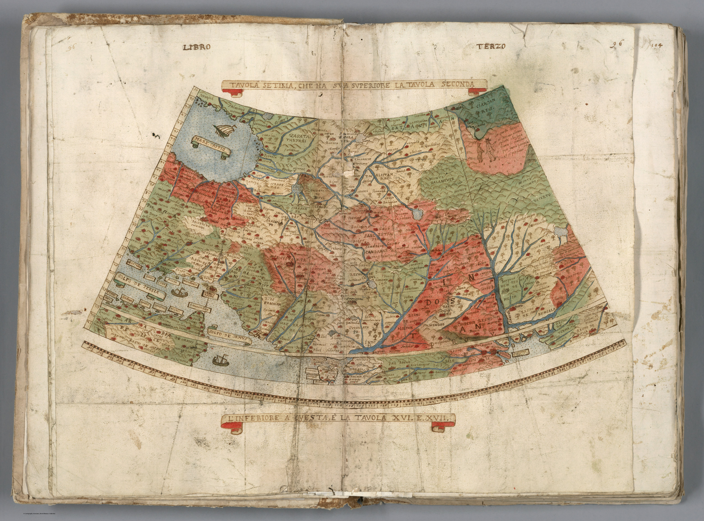

Room 01
Antiquity and Renaissance
India enters European cartography as a coastline and a rumour. Portuguese pilots chart the shore they have sailed, while scholars still bend the unseen interior to fit Ptolemy — a geographer fifteen centuries dead. The gaze is maritime at the edges and inherited in the middle: what Europe knows, it knows from the deck of a ship; what it does not, it fills with classical authority and ornament.
 Tab. Moderna Indiae1525
Tab. Moderna Indiae1525 Indiae Orientalis1570
Indiae Orientalis1570
Tavola Setima, Che Ha Sua Superiore La Tavola Seconda. Libro Terzo1587 xxxiiii) Alexandri Magni Macedonis Expeditio1595
xxxiiii) Alexandri Magni Macedonis Expeditio1595 Southwest Asia. Definiantur in hac tabula, Orae maritimae Abexie, freri Mecani al Maris Rubri Arabiae1595
Southwest Asia. Definiantur in hac tabula, Orae maritimae Abexie, freri Mecani al Maris Rubri Arabiae1595 xxxvi) Erythraei Sive Rubri Maris Periplus1597
xxxvi) Erythraei Sive Rubri Maris Periplus1597 Calecut Nuova Tavola1599
Calecut Nuova Tavola1599 India orientalis1600
India orientalis1600 India Orientalis1623
India Orientalis1623